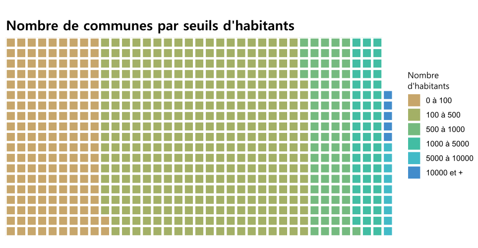

Bienvenue sur mon portfolio
Bienvenue sur mon portfolio Github. Je voulais créer quelque chose de simple et accessible pour vous présenter quelques productions cartographiques et graphiques que j'ai réalisée au cours de mon alternance. Ainsi, voici quelques cartes et graphiques que j'ai tirés de mon projet d'atlas cartographique.
